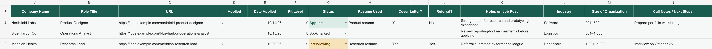
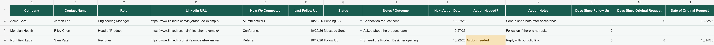
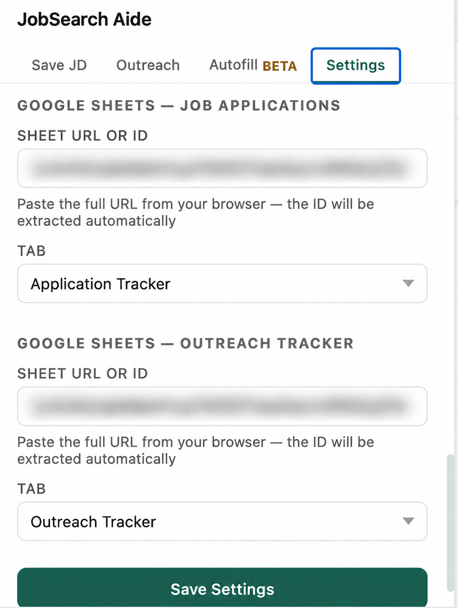

Job Applications tab
Fourteen columns for the job link, application status, fit, materials used, and next steps.

Follow the steps below to connect your spreadsheet and start tracking your job search.
JobSearch Aide is preparing for release in the Chrome Web Store. The installation link will be added here when it is available. Existing beta users can continue with the spreadsheet setup below. For access questions, contact support.
Make your own copy of the Google Sheets template. It includes a Job Applications tab and a Networking Outreach tab.
Fourteen columns for the job link, application status, fit, materials used, and next steps.

Fourteen columns for LinkedIn contacts, connection source, outreach status, dates, and notes.

Leave the header row in place in both tabs. The extension saves data by column position, so do not reorder, insert, or remove columns A through N. You can rename the file and tabs, change the formatting, and delete the example rows.
Open the extension’s Settings and sign in with a Google account that can edit your spreadsheets. In each tracker section, paste the URL of the spreadsheet you want to use. Both trackers can share one spreadsheet, or each can use a separate one.
Under Tab, select the worksheet tab where that tracker’s data should be saved—the name shown along the bottom of your Google spreadsheet. For Job Applications, choose your job application tab; for Outreach Tracker, choose your networking outreach tab. Your tab names can be different from those in the screenshot. Save your settings when both are selected.

Optional · Form filling is in beta
Want help filling out application forms? Add your personal and application details to your profile in the extension’s settings, then save. You can skip this step if you only want to track jobs and outreach.
If the tab list does not appear, confirm that the signed-in Google account can edit the sheet, then paste the full Sheets URL again.
For networking, the LinkedIn URL is the main duplicate key. If there is no URL, the extension uses contact name plus company.